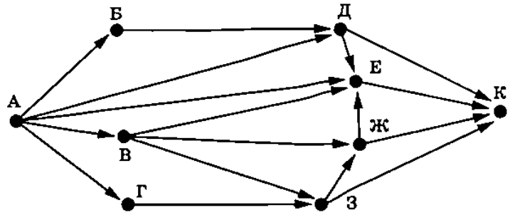

Информатика ОГЭ 2025 года содержит 16 заданий, то есть работа состоит из двух частей. Первая часть содержит 10 заданий с краткими ответами, во второй части 6 заданий, которые необходимо выполнить на компьютере.
С 1 по 12 ответы необходимо перенести на БЛАНК ОТВЕТОВ № 1.
C 13 по 16 необходимо выполнить на компьютере, результатами выполнения заданий являются отдельные файлы. Имя файла которого сохранили необходимо перенести на БЛАНК ОТВЕТОВ № 2.
| Номер задания | Максимальный балл |
| № 1-12 | 1 |
| № 13 | 2 |
| № 14 | 3 |
| № 15 | 2 |
| № 16 | 2 |
| Баллы | Оценка |
| 0-4 | 2 |
| 5-10 | 3 |
| 11-15 | 4 |
| 16-21 | 5 |
1. В одной из кодировок Unicode каждый символ кодируется 32 битами. При подготовке сообщения по истории математики Вова написал текст (в нём нет
лишних пробелов):
«В математике до сих пор используются такие буквы греческого алфавита, как пи, кси, бета, гамма, лямбда, эпсилов».
Затем Вова удалил из списка название одной буквы, а также лишние запятую
и пробел — два пробела не должны идти подряд.
При этом размер нового предложения в данной кодировке оказался на 28 байт
меньше, чем размер исходного предложения. Напишите в ответе удалённое название
буквы.
2. От разведчика было получено сообщение:
110101111010011100
В этом сообщении зашифрован пароль - последовательность русских букв. В пароле использовались только буквы А, Б, В, К, Л, М, Н; каждая буква
кодировалась двоичным словом по следующей таблице.
| А | Б | В | К | Л | М | Н |
| 0 | 10 | 1100 | 1101 | 1110 | 11110 | 11111 |
Расшифруйте сообщение. Запишите в ответе пароль.
3. Напишите наибольшее натуральное число x, для которого ложно высказывание:
(x кратно 10) ИЛИ (x > 80)
4. Между населёнными пунктами A, B, C, D, E построены дороги, протяжённость которых (в километрах) приведена в таблице.
| A | B | C | D | E | |
| A | 10 | 20 | 20 | ||
| B | 10 | 10 | |||
| C | 20 | 10 | 9 | 1 | |
| D | 9 | 7 | |||
| E | 20 | 1 | 7 |
Определите длину кратчайшего пути между пунктами A и D. Передвигаться
можно только по дорогам, указанным в таблице.
5.
У исполнителя Омега две команды, которым присвоены номера:
1. умножить на 2
2. прибавь 5
Первая из них увеличивает число на экране в 2 раза, вторая прибавляет к числу 5. Исполнитель работает
только с натуральными числами.
Составьте алгоритм получения из числа 3 числа 39, содержащий не более 5 команд.
В ответе запишите только номера команд.
(Например, 12211 - это алгоритм:
умножь на 2
прибавь 5
прибавь 5
умножь на 2
умножь на 2
который преобразует число 1 в 48.).
Если таких алгоритмов более одного, то запишите любой из них.
6. Ниже приведена программа, записанная на пяти языках программирования.
| Бейсик | Алгоритмический язык | Паскаль |
|
DIM k, s AS INTEGER INPUT s INPUT k IF s <= 70 AND t < 80 THEN PRINT "YES" ELSE PRINT "NO" END IF |
var s, k: integer; begin readln(s); readln(k); if s <= 70 и t < 80 then writeln ('YES') else writeln ('NO') end. |
алг нач цел s, k ввод s ввод k если (s <= 70) AND (t < 80) то вывод "YES" иначе вывод "NO" все кон |
| С++ | Python | |
| #include using namespace std; int main() { int s, k; cin >> s; cin >> k; if (s <= 70 && t < 80) cout << "YES"; else cout << "NO"; return 0;} |
s = int(input()) k = int(input()) if s <= 70 and t < 80: print("YES") else: print("NO") |
|
Было проведено 10 запусков программы, при которых в качестве значений переменных в и ( вводились следующие пары чисел вида (s. t):
(-10, 2): (-5, 85); (0, 29); (0, 77): (44, -4); (41, 105): (70, 60); (70, 80); (76, 200); (100, 100).
Сколько было запусков, при которых программа напечатала YES»?
7.
Доступ к файлу com.py, находящемуся на сервере exe.ru, осуществляется по протоколу http.
Фрагменты адреса файла закодированы цифрами от 1 до 7. Запишите последовательность этих цифр, кодирующую адрес
указанного файла в сети Интернет.
1) ://
2) /
3) .py
4) exe
5) .ru
6) http
7) com
8.
В языке запросов поискового сервера для обозначения логической операции «ИЛИ» используется символ «|»,
а для логической операции «И» – символ «&».
В таблице приведены запросы и количество найденных по ним страниц некоторого
сегмента сети Интернет.
| Запрос | Найдено страниц (в тысячах) |
| Севастополь & Оборона & Картина | 120 |
| Севастополь & Оборона | 235 |
| Севастополь & Картина | 825 |
Какое количество страниц (в тысячах) будет найдено по запросу Севастополь & (Оборона | Картина)?
Считается, что все запросы выполнялись практически одновременно, так что набор страниц, содержащих все искомые слова, не изменялся за время выполнения запросов.
9.
На рисунке – схема дорог, связывающих города А, Б, В, Г, Д, Е, Ж, З и К. По каждой дороге можно
двигаться только в одном направлении, указанном стрелкой. Сколько существует различных путей из города А в город К?

10.Вычислите значение арифметического выражения:
В ответе запишите десятичное число, основание системы счисления указывать не нужно.
11.
В романе Ф. М. Достоевского «Идиоть, текст которого приведён в подкаталоге каталога Проза, один из героев высказывает мнение о том, что русская литература
вся нерусская, за исключением произведений трёх авторов, двое из которых Пушкин и Ломоносов.
С помощью поисковых средств операционной системы и текстового редактора или браузера выясните фамилию третьего автора.
 Скачать файл
Скачать файл12. Сколько файлов с расширением .txt содержится в подкаталогах каталога Классика/Стихи? В ответе укажите только число. (нет файлов для данного задания) ответ: 16
12. Сколько файлов с расширением .rtf содержится в подкаталогах каталога DEMO-12/Поэзия? В ответе укажите только число.